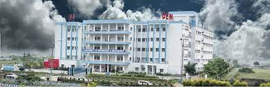
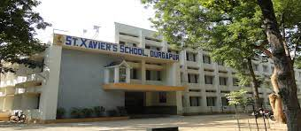
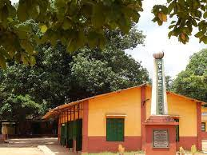

My Educational Background
- University of Engineering and Management, Kolkata
- - Graduation year 2020 in Electronics and Communication Engineering

- St.Xavier's Durgapur
- - A high school science graduate in the year 2016
- - Board ISC

- St.Peter's Durgapur
- - A science graduate in the year 2014
- - Board ICSE

My Experience
- Cognizant Technology Solutions
- - Intern for a tenure of 4 months: 2020
- Cognizant Technology Solutions
- - QA automation Engineer for a tenure of 2 years : 2020 - 2022
- Price Waterhouse Coopers, India
- - Automation Test Engineer from 2022